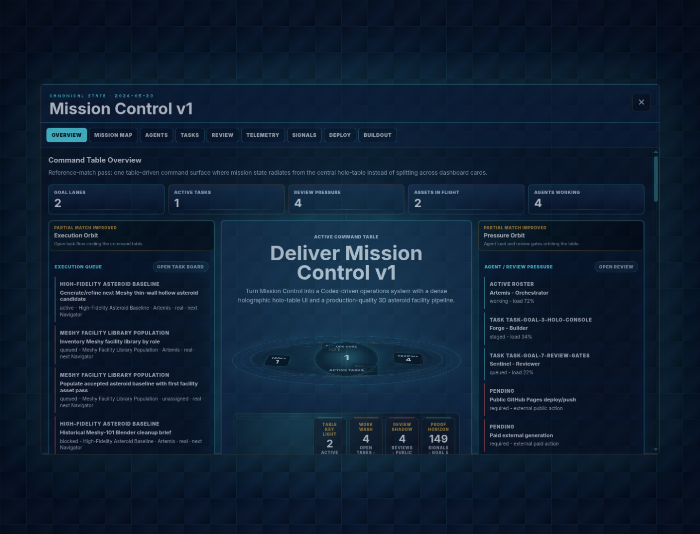

Reference direction
Holographic command-table moodboard: central table as hero object, projected operational data, fine-line depth, asymmetric composition, and command-room contrast.

Goal 5 / Holo-table overlay
Holographic command-table moodboard: central table as hero object, projected operational data, fine-line depth, asymmetric composition, and command-room contrast.
Current overlay-only capture from ?overlay=1&console=overview. The table anchor, left orbit, right orbit, proof horizon, and matrix verdicts are visible, but the result stays partial.

Oval table, instrument pods, asymmetric vector, light field, and composition spine are captured together. Stronger reference-scale composition is still needed.
Execution, pressure, evidence, and orbit bands now wrap the table proof. The surrounding bands still need a larger asymmetric read.
Fine-line grid, depth rings, contrast rails, and composition spine are present. Full-room lighting continuity remains an open Goal 5 gap.
Goals, tasks, agents, reviews, telemetry, artifacts, and events remain state-backed and visible without fake backend actions.
Fresh desktop/mobile proof and this board are recorded after the full-room composition spine pass.
Board compares moodboard, current overlay capture, and all five Goal 5 zone verdicts in one artifact.
No reference-complete claim. This board documents the composition-spine state after the latest pass.
Increase table-first scan order with larger asymmetric bands and authored full-room lighting continuity.